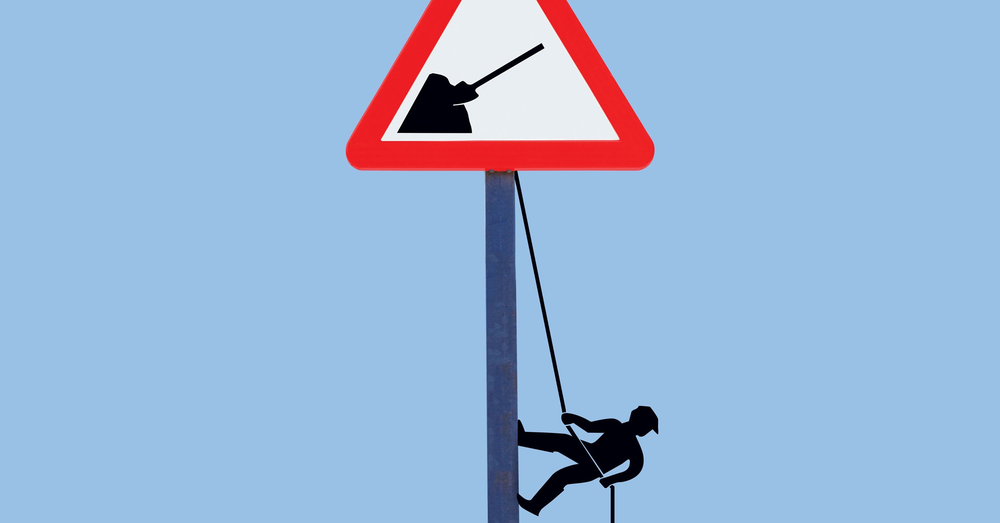

Män kommer att förlora de flesta jobb till robotar, och det är okej
Robotar kommer till våra jobb - men inte alla våra jobb. De kommer, i allt större antal, för en viss typ av arbete. För gård och fabriksarbetare. För konstruktion. För transport. Med andra ord görs blåttkraftsjobb traditionellt gjort av män.

Det är därför automation är så mycket mer än ett ekonomiskt problem. Det är ett kulturellt problem, ett identitetsproblem och ett kritiskt könsproblem. Miljontals män runt om i världen stirrar in i de lackerade tänderna av föryngring, rädd för att förlora inte bara deras säkerhet utan även deras källa till mening och värdighet i en värld som berättar för dem att om de inte är rika, skulle de göra det bättre Något väldigt manligt för pengar. Annars handlar de om så mycket som en träbuss-och-fyra på motorvägen.
Det finns hopp för mänskligheten, men det kommer att bli svårt att sälja. Hur vi svarar på automatisering kommer mycket att bero på vad vi bestämmer för att det innebär att vara en man eller en kvinna i det obekväma ungdomar från det 21: a århundradet.
En del politisk retorik skyller på outsourcing och invandring för minskningen av "mäns arbete", men automatisering är ett större hot mot dessa typer av jobb - och tekniska framsteg kan inte stoppas vid någon gräns. En ny studie från Oxford förutspådde att 70 procent av amerikanska byggnadsjobb kommer att försvinna under de kommande decennierna. 97 procent av dessa jobb hålls av män, och det är 95 procent av de 3,5 miljoner transport- och lastbilsjobb som robotar för närvarande tittar på. Det är skrämmande, och det är en anledning till att så många män uttrycker sin ilska och ångest hemma, på gatorna och i omröstningarna.
Medan allt detta pågår, finns det ett motfenomen att spela ut. Som samhällspanorier om att mäta arbetarkroppar och självkörande 18-hjulsvagnar, är jobb som traditionellt utförs av kvinnor - i den så kallade rosa-krageindustrin, såväl som obetalt arbete - fortfarande relativt säkra, och vissa ökar även. Dessa inkluderar barnomsorg. Och service. Och omvårdnad, som den amerikanska presidiet för arbetsstatistik förutsäger, kommer att behöva en miljon plus fler arbetare under det närmaste decenniet.
Enligt den fria marknadens logik, när arbeten förstörs inom ett område av ekonomin, kommer människor att flytta till nya produktivitetsområden, förvärva nya färdigheter när de reser. Så du kan föreställa dig att fabriksarbetare blir nanny. Inte exakt. Det beror på att vi pratar om "kvinnors arbete". Kvinnors arbete är lågt betalt och låg status, och män är konditionerade att förvänta sig bättre.
Men vi har alla hört talas om könslön. Den större frågan är klyftan mellan könen - det faktum att kvinnor runt om i världen gör mer arbete för mindre lön eller ingen lön alls. (En 2016 FN-rapport uppskattade att om kvinnornas obetalda arbete hade ett monetärt värde skulle det utgöra upp till 40 procent av den globala BNP.) Tekniska framsteg skulle kunna göra denna obalans sämre - eller det skulle kunna hjälpa oss att lösa tvillingkrisen av arbetskraft och vård på en gång. Problemet är som alltid ingen teknik. Problemet är med sociala attityder, och de kan inte uppdateras med en pekskärm.
Oavsett om du tror att män är på väg att gå vägen för den bärbara CD-spelaren beror helt och hållet på hur du definierar manligheten själv. Många män har blivit utbildade över otaliga generationer för att förena sin egen värdighet med utförandet av uppgifter som i en verklig mening är robot-förutsägbara, repetitiva och känslosamma. Problemet är att maskinerna är mycket bättre att vara förutsägbara, repetitiva och känslomässiga än människor. Vad människor gör bättre är alla andra saker: Vi är bättre att vara anpassningsbara, medkännande och intuitiva; Bättre på att göra arbete som innebär att man faktiskt rör och tänker på varandra Bättre att göra konst och musik som lyfter oss över djuren, bättre, kort sagt, att hålla varandra levande. Vi har walled av allt som arbetar och förklarade det mest kvinnors verksamhet, även som utmattade kvinnor har bett män att gå med i dem.
Några män har redan visat en vilja att tänka på dessa problem. I Silicon Valley är dagens heta ämne universell grundinkomst, föreslagen av kvasinljusade VC-typer och tekniska VD som ett sätt att avgränsa arbete och löner, eftersom robotar tar över fler och fler jobb. Feminister har faktiskt argumenterat för en grundläggande inkomst i årtionden som ersättning för obetaldt arbetskraft. Nu när männen befinner sig mer tid att utföra hushållsuppgifter börjar de äntligen att lyssna.
Det är frustrerande, men det är också fantastiskt, för det är ett första steg. Arbetet är arbete, och som män kommer inse att samhället som helhet kan börja värdera roserskydd och obetald arbetskraft mer mycket och - som män tar dessa jobb och går med i uppmaningen till ökade löner - kompenserar det rättvist. Fördelarna multipliceras bara. Inte längre tvungna att välja mellan arbete och familjeliv, fler kvinnor kan förbli och trivas i, säg, snabbväxande STEM-fält, vilket ökar talan och kompetensen.
Automatisering behöver inte göra män föråldrade, inte om de är villiga att ändra sin inställning. Så länge män strävar efter att vara kuggar i en föråldrad maskin, kan robotar väl ersätta dem. Men om de har modet att föreställa sig olika liv av service och värdighet, och sedan kräva att dessa liv görs möjliga med avseende på både timmar och löner, kan automatisering hjälpa oss alla att vara mer mänskliga.
Följande artikel handlar också om robotar..
Ökad robotisering och automatisering är förändringar som skapar både jobb och välstånd tack vare den ökade produktivitet det medför. De alarmistiska stämningarna kring robotisering är också överdriven. Automatisering leder till att både nya behov och nya yrken uppstår och kan också behövas för att råda bot inom områden med stor brist på arbetskraft. Det skriver kulturgeografen Jonathan Borggren.
Automatisering, digitalisering och robotisering är begrepp som duggar tätt i dagens kunskapssamhälle. Ofta då i kombination med ödesmättade konstateranden om deras negativa inverkan på jobb och sysselsättning. Men samtidigt innebär automatisering högst nödvändiga produktivitetsvins-ter för svenska företag och möjligheter att med andra verktyg bekämpa arbetskraftsbrist inom skola och omsorg.
I mitt arbete med rapporten Strukturomvandling och Automatisering (Region Skåne 2016) är en av slutsatserna att den alarmistiska stämning som präglat den senaste tidens diskussion om digitaliseringens effekter på framtida jobb i bland annat Skåne är överdriven.
Det finns tid att förbereda några av våra största yrkeskategorier inom till exempel vård och omsorg. Frågan är bara hur.
Exemplen på att robotarna kommer är många:
En bank i Nederländerna meddelade nyligen att den kommer att låta 5 800 anställda gå för att ge plats åt en ”digital finansplattform”.
Ett datorprogram ställer idag vissa cancerdiagnoser med större precision än de mest erfarna onkologer.
Så kallade ”co-bots” som arbetar tillsammans med anställda och där omprogrammering av robotens rörelser reducerats till en enkel knapptryckning blir allt billigare.
Logistikbranschen kommer allt närmare en bred introduktion av autonoma transporter.
Automatiseringen av våra arbetsuppgifter är alltså över oss på bred front. Hög- eller lågutbildad spelar ingen roll – ingen går längre säker.
För att förbereda några av våra kärnyrken (till exempel lärare, ekonomer, vårdpersonal eller detaljhandelspersonal) på den teknikutveckling som sker behöver vi tidigt införa den kunskap som kommer att krävas.
Vi kan inte längre nöja oss med att ingenjörer och IT-personal tillgodogör sig den senaste tekniken i syfte att uppdatera sin kompetens – kärnyrkena måste också ges möjlighet att ta del av den senaste tekniken oavsett om det handlar om robotar, mjukvara, molnet-tjänster eller digitala hjälpmedel.
För några yrken kommer det att innebära ett förnyat (och kanske välbehövligt) fokus på kärnuppgifterna. För andra yrken blir de automatiseringsbara arbetsuppgifterna så många att vi talar om en mer fullständig förändring av yrkets innehåll och identitet.
Det som skett är att automatiseringens effekter når yrken som tidigare ansågs fredade, vilket spätt på den alarmistiska stämningen. Till exempel kan även vissa högutbildade specialister sannolikt snart ersättas av digitala lösningar.
2015 skrev ekonomen Mårten Blix på DN Debatt att ”allt fler jobb automatiseras och de arbetstagare som är långsamma med att hoppa på det digitala tåget kommer i allt högre grad bli marginaliserade”.
Det stämmer till viss del. Automatisering tar bort vissa jobb. Men samtidigt är det lätt att blunda för de jobbskapande processer som sker. Låt oss till exempel ta de som utvecklar appar till mobiltelefoner. Om vi backar tjugo år i tiden och letar efter någon som förutspår att 10 000 personer i Sverige idag ska ”jobba med appar” får vi nog leta länge.
Istället bör den pågående automatiseringen i Skåne betraktas som jobbpåverkande snarare än jobbförstörande och är på så vis en spegling av den pågående strukturomvandling som sker och som de facto skett i olika vågor de senaste tvåhundra åren.
Jobb förstörs och jobb skapas men viktigast är hur dagens jobb förhåller sig till den teknikutveckling som sker. Här har vårt hög-re utbildningssystem och arbetsmarknadens parter stora utmaningar framför sig för att se till att acceptans för teknik inte blir en generationsfråga. Budskapet är solklart till Region Skåne och till berörda utbildningsanordnare som skall förse vården med personal:
Välkomna automatiseringen samtidigt som befintliga yrken synkas med den nya tekniken.
Jonathan Borggren
SKRIBENTEN
Jonathan Borggren är filosofie doktor i kulturgeografi och medförfattare till rapporten ”Strukturomvandling och automatiseringens konsekvenser”.